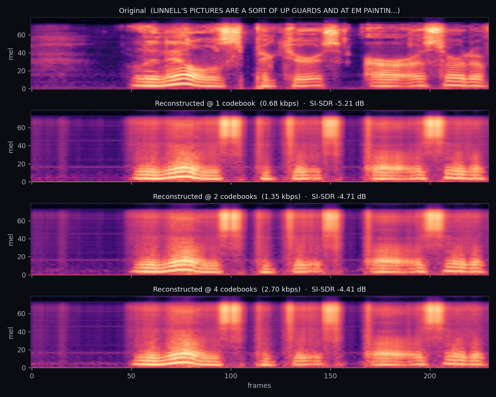

Audio · Codec · Self-supervised
A residual vector-quantized autoencoder (SoundStream / EnCodec family), trained end-to-end on real LibriSpeech speech on Apple Silicon. The encoder turns 24 kHz audio into a stream of integer codes at 75 Hz; the decoder turns them back into a waveform. One trained model serves three different bitrates — pick how many codebooks to keep at decode time and the quality scales with the bits you spend.
Record from your microphone (or upload a clip), pick a bitrate, and the trained codec runs
entirely in your browser via onnxruntime-web. No server round-trip — the encoder
and decoder weights stream once, then every encode is local.
Six held-out LibriSpeech utterances. Each is encoded into integer codes, then decoded back from 1, 2, or 4 codebooks. More codebooks = more bits = better quality.
All four signals logged every 25 steps. Reconstruction L1 in the time domain, multi-scale STFT loss across the frequency domain, VQ commitment loss, and held-out SI-SDR at full bitrate.
One held-out clip's mel-spectrogram, before and after the codec at each bitrate. As bits drop, fine spectral detail blurs but the harmonic stack and formant trajectories survive — these are the perceptually important parts of speech.

A neural audio codec compresses a waveform into a sequence of integer codes, then reconstructs it. The whole pipeline is trained end-to-end so the encoder, the discrete bottleneck, and the decoder co-adapt — the codec learns its own representation of audio instead of using a hand-designed one like MP3 or Opus.
Four strided 1-D conv stages (strides 2, 4, 5, 8) with dilated residual blocks. 24 000 samples per second → 75 latent vectors per second. The total downsampling factor is 320×.
Four stacked codebooks of 512 entries each (9 bits / frame each). Each codebook quantizes the residual the previous one left behind — capacity stacks without raising the frame rate.
Mirror of the encoder built with transposed convolutions. The final tanh head keeps the reconstructed samples inside [-1, 1] so the output is a valid waveform.
No hand-designed psychoacoustic model. The codec learns which information matters by trying to reconstruct the original waveform under a bitrate budget.
A single VQ codebook with K entries can represent at most K different points per frame — at 512 entries that's only 9 bits. To squeeze more information out of every frame without raising the frame rate (and the bitrate), residual VQ stacks codebooks: the second codebook quantizes the leftover error from the first, the third quantizes the error from the second, and so on.
# Residual VQ — what each iteration of the loop does residual = z # start with the encoder's continuous latent out = zeros_like(z) for vq in codebooks: # 4 codebooks here # nearest-neighbour lookup in this codebook idx = ((residual - vq.codebook) ** 2).sum(-1).argmin(-1) q = vq.codebook[idx] # the chosen entry out = out + q # add it to our running reconstruction residual = residual - q # subtract; whatever is left is the new target return out, indices # `out` ≈ z; `indices` are the integer codes
The encoder output is a continuous vector. The stack of indices is what we
transmit (or store, or feed to a downstream language model). The decoder only ever sees
out, which is just the sum of codebook entries the indices point to —
everything past the encoder is a discrete sequence of small integers.
Notice that in the sample player above, three different reconstructions of the same clip all
come from the same model — we just chose to decode using 1,
2, or 4 codebooks. That works because of a small but important
training trick from SoundStream and EnCodec: at each training step, we pick a random
number of active codebooks and only run that many. The decoder learns to produce a reasonable
waveform whether it sees the contribution of one, two, or four codebooks.
for step in range(steps): x = next_batch() # pick how many codebooks are active for THIS step n_active = randint(1, n_codebooks + 1) y, _, commit, codebook = model(x, n_active=n_active) loss = recon_l1(y, x) + multiscale_stft(y, x) + 0.25 * commit + codebook loss.backward(); opt.step()
Without this trick, the decoder would over-rely on the highest codebooks and degrade catastrophically when you tried to use fewer of them. With it, you get a single model with a scalable bitrate dial. That's the property that lets a downstream language model stream at low bitrate and a higher-quality renderer decode at full bitrate.
argmin
The single trickiest part of training any neural codec: the argmin that picks a
codebook entry is not differentiable. There's no gradient that tells the encoder
"you should have produced a slightly different latent so a different codebook entry was
chosen." If we tried to backprop through it honestly, the encoder would never learn.
The straight-through estimator sidesteps the problem with a one-liner: in
the forward pass we use the quantized vector q; in the backward pass we pretend
the lookup was the identity function — gradients flow from the decoder straight back into the
continuous latent z as if nothing had been quantized.
# forward = q (discrete), backward = ∂/∂z is identity
q_st = z + (q - z).detach()
(q - z).detach() is treated as a constant by autograd, so
∂q_st / ∂z = 1. The encoder gets a usable gradient, the decoder only ever sees
codebook entries, and the codebook itself is moved towards the encoder outputs by a separate
commitment loss — the 0.25 * commit term above.
A naive choice is to just minimise ‖y − x‖₁ in the time domain. That fails badly
for audio: two waveforms can sound identical to a human while being out of phase by a few
samples, and the L1 loss will report a huge error. The model would then learn to produce a
blurry, over-smoothed signal that minimises pointwise error but sounds awful.
Multi-scale STFT loss compares magnitude spectrograms at several FFT resolutions — we no longer care about phase, only about the energy distribution across frequency at different time scales. Big FFT windows catch the long-term harmonic structure; small windows catch transients and consonants. The codec is rewarded for getting the time-frequency shape right, which is closer to what the human ear actually hears.
def multiscale_stft_loss(y_hat, y): return sum( stft_loss(y_hat, y, n_fft=n, hop=h) for n, h in [(2048, 512), (1024, 256), (512, 128), (256, 64)] ) / 4 def stft_loss(y_hat, y, n_fft, hop): Y, Yh = stft(y, n_fft, hop), stft(y_hat, n_fft, hop) sc = (Y.abs() - Yh.abs()).norm() / Y.abs().norm() # spectral convergence log_mag = F.l1_loss(Yh.abs().log(), Y.abs().log()) # log-magnitude L1 return sc + log_mag
"Codebook collapse" is a classic failure mode: the encoder lands on a handful of entries and
ignores the rest, throwing away the capacity you paid for. The right diagnostic is each
codebook's effective perplexity — exp(H(usage)) — which measures the
effective number of entries actually being used. For a codebook of size 512, perplexity
close to 512 is healthy; close to 1 is collapse.
In a healthy RVQ stack the first codebook usually has the highest perplexity (it sees the raw latent and benefits most from spreading entries out); later codebooks have lower perplexity because the residuals they're quantizing are smaller and more concentrated near zero. Watch for any codebook collapsing below ~50 — that's a sign of a sick training run.
Discrete audio tokens are the lingua franca of modern generative-audio systems. Every recent speech LM — AudioLM, VALL-E, Moshi, Voicebox, Mimi — sits on top of a neural codec that turns waveforms into integer sequences a transformer can autoregress over. The same architecture appears in:
This project is the codec piece, built from the ground up so the joints — strided conv geometry, residual VQ math, the straight-through gradient, quantizer dropout, multi-scale STFT loss, codebook diagnostics — are all visible and modifiable. Drop in a different decoder, a different quantizer, a different loss, and the rest of the pipeline keeps working.